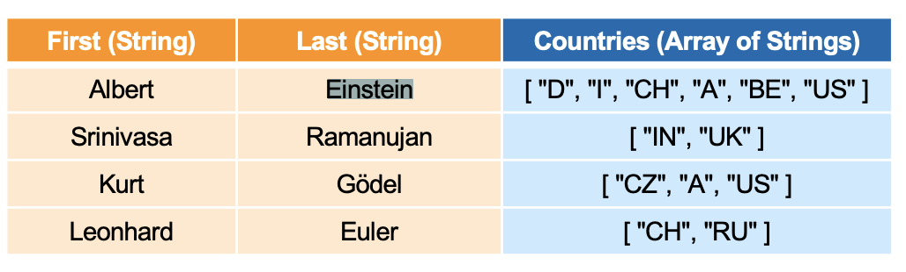

Spark Session Initialization, RDD and DataFrames
<br> <br>
This second post present the basic set up of a Spark session and goes
over the basic of creating Spark RDDs, the first-class citizens of
Spark. An RDD is a Resilient Distributed Dataset. It is Resilient as
it can be recomputed if cluster failures happens. It is distributed as
an RDD can be distributed among cores and machines. And it is finally
a dataset.
RDDs are saved in-memory by default. Nonetheless when the memory of the machine is not sufficient to handle the data, RDDs are splitted to disk.
Finally this post outlines a bit the difference among RDDs and DataFrames and tries to clarify that.
Session Set Up
First of all it is necessary to create entry point to programming Spark with the Dataset and DataFrame API. This is done through the SparkSession function of the pyspark module. This will allow you to create DataFrame, register DataFrame as tables, execute SQL over tables, cache tables, and read parquet files (a special kind of files particularly suited for big data storage and processing).
Unless you will work as a Data Engineer your job will not be the one of initiating a spark session however, should that be the case or if you will want to run Spark locally for training yourself as I am doing you can follow the instructions below.
At a high level, every Spark application consists of a driver program that launches various parallel operations on a cluster. The driver program contains your application's main function and defines distributed datasets on the cluster, then applies operations to them.
Driver programs access Spark through a SparkContext object, which represents a connection to a computing cluster.
When you initiate such SparkContext you can specify a multitude of arguments that will affect the general scope of your session. You can find a reference for session arguments under this official Spark link. Such configuration parameters specified will be passed from your Spark driver application to the SparkContext. Some of these parameters define properties of your Spark driver application and some are used by Spark to allocate resources on the cluster such as, the number, memory size and cores uses by the executors running on the workernodes.
Among the other I underline:
- master = ["local", "local[4]", “spark://master:7077”], where the first element is setting the Spark master locally and the second sets the Spark master locally with 4 cores, while the third option is an example of selecting a Spark standalone cluster.
- config = either a key value pair of an existing SparkConf containing the configuration arguments or the SparkConf object itself.
- getOrCreate() = Gets an existing SparkSession or, if there is no existing one, creates a new one based on the options set in this builder.
import findspark
findspark.init()
from pyspark.sql import SparkSession
spark = SparkSession \
.builder \
.master ("local") \
.appName("My first Spark Session") \
.getOrCreate()
Good you just created your first Spark Session. In the next section I will start to check at the different data import options and data tweaks.
Data Creation
From Python objects
Here you use the parallelize method to a local Python collection to form an RDD.
spark.sparkContext.parallelize([(1, 2, 3, 'a b c'),
(4, 5, 6, 'd e f'),
(7, 8, 9, 'g h i')]).collect()
You might even create different partitions of the RDDs when creating one. This is done by entering the different partitions in a list and selecting the number of partitions.
rdd = spark.sparkContext.parallelize([(1, 2, 3, 'a b c'),
(4, 5, 6, 'd e f'),
(7, 8, 9, 'g h i')], 3)
print(rdd.getNumPartitions())
print (rdd.glom ().collect())
The glom() method above returns an RDD created by coalescing all
elements within each partition into a list.
From a stable Storage
It is possible to create an RDD from multiple stable storage options.
Local File system:
-
file: Read from the local file system.
HDFS:
-
hdfs: Read from a Hadoop Distributed File System.
Block Storage:
-
s3: Read from AWS S3 Storage. -
wasb: Read from Azure Blob Storage.
The blow illustrates such an example.
# sc is the Spark Context object automatically created for you
fruits = sc.textFile('wasb:///example/data/fruits.txt')
yellowThings = sc.textFile('wasb:///example/data/yellowthings.txt')
RDD vs DataFrame
The idea of DataFrames
The conversion from Spark RDDs to Dataframe came essentially with Spark 2.0. The idea was to bring Spark RDDs under the hood of SQL and leverage the many benefits from the very long lasting research literature on SQL. See Catalyst and Project Tungsten.
A data frame is in fact "tabular" data: a data structure representing cases (rows), each of which consists of a number of observations or measurements (columns).
The idea for making that possible was then the one of having a schema where each value of an RDD would contain a row of the table you aim to represent.
A futher benefit of creating a dataframe representation from RDD is
the one of columnar storage. Here the key concept is the one of
standardization. Once you have a tabular representation of your
data through RDDs it is possible to save columns which are likely
highly standardized together reaching the highest possible
efficiency. This means concretely that you therefore save memory
and reduce the computation time.
Creation of DataFrames
A spark RDD can be created in multiple ways among the others by:
-
Transforming an existing RDD into a dataframe
df = spark.sparkContext.parallelize([(1, 2, 3, 'a b c'), (4, 5, 6, 'd e f'), (7, 8, 9, 'g h i')]).toDF(['col1', 'col2', 'col3','col4']) df.show ()
-
Importing your data as a RDD dataframe
This is achieved through the
read ()method of thepyspark.sqlAPI. It returns a DataFrameReader that can be used to read data in as a DataFrame.df = spark.read.csv("file:///Users/marcohassan/Desktop/my_test.csv") df.show ()
Notice that you can read among the many different file formats and
not just the classical tabular csv format.
read.json ()
read.parquet ()
read.text ()
read.jdbc ()
read.format("avro")
Important: Note, that your json does have to have one object per row in the text file. I was keeping my json in pretty-print format and I lost like a good hour understanding what went wrong when importing the data.
Are also viable options. Moreover, you can as always select Blockstorage, the Local File System or HDFS as the source of your data.
Schema Inference
An important question that arises is how to specify the schema of the tabular representation of the data you are importing. Interesting is that in contrast to SQL there is no need to create a table and specifying the schema of it when importing the data.
Such a schema is internally inferred by Spark at the time of the data import. Should you be interested in the available data types of spark you can consul the following link. There is even the option to manually set the data schema for the imported data, so should you even need that you can go into it.
About the break of first-normal form
It is clear that when importing tree-shaped data, your data might easily break the first-normal form.
How are such data saved in the tabular form?
The solution was here to extend the relational base logic by
allowing a futher array datatype as you can see from the link in
the previous section. You can think it as follows:

SQL commands
As your data are in tabular form you may now leverage the SQL syntax for querying your data.
Array Objects
Notice that it is now clear though that we have to extend the functions of SQL for dealing with such a cases.
This was solved by introducing some new functions such as
EXPLODE.
To see that consider the following json.
{
"First": "Albert",
"Last": "Einstein",
"Countries": [
"D",
"I",
"CH",
"A",
"BE",
"US"
]
}
Notice again that the above is in pretty-print format just for facilitating you to read it but it should be saved as a one liner for the spark API to correctly work.
df = spark.read.json("file:///Users/marcohassan/Desktop/my_test.json")
df.createOrReplaceTempView("dataset")
## note that the space at the end of each line is important for the
## SQL API
df2 = spark.sql("SELECT First,EXPlODE(Countries) "
"FROM dataset ")
df2.show ()
Nested Objects
The same holds for nested entries.
{
"Name": {
"First": "Albert",
"Last": "Einstein"
},
"Countries": 6
}
{
"Name": {
"First": "Srinivasa",
"Last": "Ramanujan"
},
"Countries": 2
}
{
"Name": {
"First": "Kurt",
"Last": "Gödel"
},
"Countries": 1
}
df = spark.read.json("file:///Users/marcohassan/Desktop/my_test.json")
df.createOrReplaceTempView("dataset")
## note that the space at the end of each line is important for the
## SQL API
print (spark.sql("SELECT * "
"FROM dataset ").show ())
df2 = spark.sql("SELECT Name.First "
"FROM dataset ")
df2.show ()
The heterogeneity flaw.
Notice that there is one last fundamental flaw when working with DataFrames API of spark.
Consider the case when your data are heterogeneous as follows:
{ "foo" : 1, "bar" : true}
{ "foo" : 2, "bar" : true}
{ "foo" : [3, 4], "bar" : false}
{ "foo" : 4, "bar" : true}
{ "foo" : 5, "bar" : true}
{ "foo" : 6, "bar" : false}
{ "foo" : 7, "bar" : true}
df = spark.read.json("file:///Users/marcohassan/Desktop/my_test.json")
df.createOrReplaceTempView("dataset")
## note that the space at the end of each line is important for the
## SQL API
df2 = spark.sql("SELECT *"
"FROM dataset ")
df2.show ()
#+beginexample
-----–—+
| bar | foo |
-----–—+
| true | 1 |
| true | 2 |
| false | [3,4] |
| true | 4 |
| true | 5 |
| false | 6 |
| true | 7 |
-----–—+
It follows now that the inferred Schema of foo will be a string as this is the only way of dealing with the outlier array entry and not an integer.
Literature
On RDDs
RDDs are lazy. This, means that only if the data is needed for a certain computation the data is read from the underlying storage system.
An RDD in Spark is simply an immutable distributed collection of objects. Each RDD can be split into multiple partitions, which may be computed on different nodes of the cluster.
The typical RDD lifecycle is as follows:
- An RDDs is first created from stable storage or by some Python objects.
RDDs offer then two types of operations: transformations and actions.
- Transformations create a new RDD from an existing one. Transformations are lazy, meaning that no transformation is executed until you execute an action.
- Actions compute a result based on an RDD, and either return it to the driver program or save it to an external storage system (e.g., HDFS). This is the end of the lifecycle.
Transformations and actions are different because of the way Spark computes RDDs. Although you can define new RDDs any time, Spark computes them only in a lazy fashion, that is, the first time they are used in an action.
Transformations
Following are examples of some of the common transformations available.
For a detailed list, see RDD Transformations
Run some transformations below to understand this better.
Note: If some of the queries are taking too long to complete, try restarting the kernel, and rerunning the cell above.
# map
fruitsReversed = fruits.map(lambda fruit: fruit[::-1])
# Note: the `collect` command is NOT a Transformation, it is an Action
# used here for the purposes of showing the results! Just use it when
# you know that the action will be small enough to be handled by the
# memeory of the machine you are working on. Otherwise, no chance you
# will be able to display your results and you will better have to
# save the results on a HDFS cluster.
fruitsReversed.collect()
# filter
shortFruits = fruits.filter(lambda fruit: len(fruit) <= 5)
shortFruits.collect()
# flatMap
characters = fruits.flatMap(lambda fruit: list(fruit))
characters.collect()
# union
fruitsAndYellowThings = fruits.union(yellowThings)
fruitsAndYellowThings.collect()
# intersection
yellowFruits = fruits.intersection(yellowThings)
yellowFruits.collect()
# distinct
distinctFruitsAndYellowThings = fruitsAndYellowThings.distinct()
distinctFruitsAndYellowThings.collect()
# groupByKey
yellowThingsByFirstLetter = yellowThings.map(lambda thing: (thing[0], thing)).groupByKey()
for letter, lst in yellowThingsByFirstLetter.collect():
print("For letter", letter)
for obj in lst:
print(" > ", obj)
# reduceByKey
numFruitsByLength = fruits.map(lambda fruit: (len(fruit), 1)).reduceByKey(lambda x, y: x + y)
numFruitsByLength.collect()